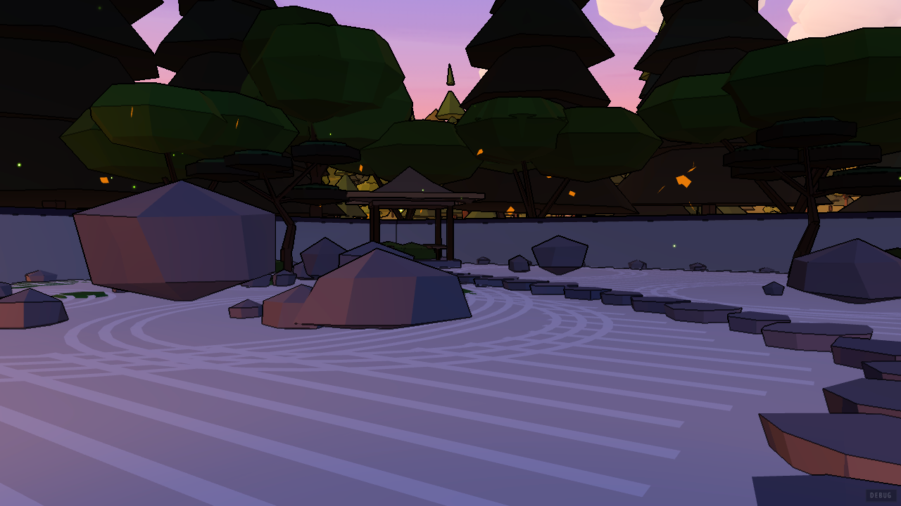
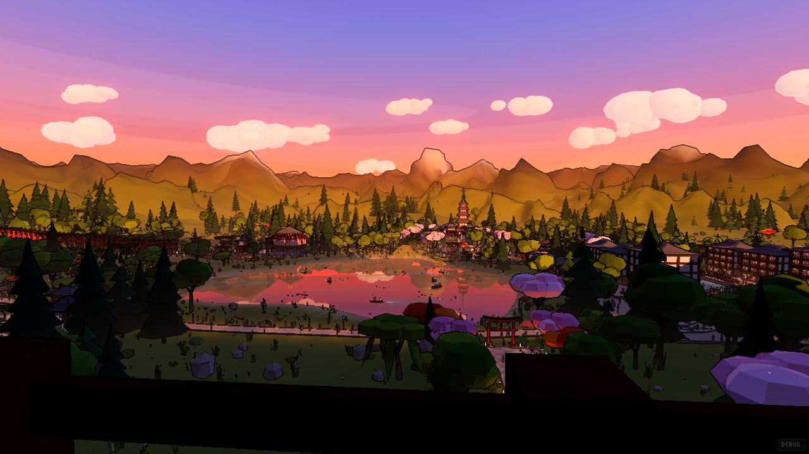

A bamboo grove with timber structures. Mid-dark overall and the most forgiving of the six — cream plates sit on it cleanly almost anywhere.
Its one hazard is vertical: the trunks are strong upright stripes, so vertical rules and tall thin columns compete with them.

A festival approach under a torii — warm reds, cream stall cloth, figures on the path. Busy through the middle band.
Vermilion is already in this picture. The action slab is the only vermilion the interface owns, and here it has competition.

A street at dusk with a mountain behind it. Purple-to-orange sky across the top third, lit buildings at both edges, a darker road down the centre.
The centre column is the safe place for pale plates; the two edges are the bright part, which is the opposite of most of the others.

Bamboo again, tighter and darker than STUDY. The most neutral ground in the set and the easiest to put anything on.
Low contrast throughout, so a design that relies on the world for separation gets no help here — it needs its own edges.

The hardest one. A five-storey vermilion pagoda dead centre, cream steps, lit lanterns, a crowd. Bright, saturated and busy exactly where a screen wants its middle.
The ascent's dark columns vanished into this before a crush layer was added. If a design works here it works anywhere; if it is only ever checked on the sunset plate, it will fail here and nowhere else.

The wide valley at sunset. Sky across the top half, a pink lake through the middle, a dark band of foreground along the bottom.
The brightest top half of the six — pale type at the top of this frame has nothing to sit against, while the bottom third is nearly black.